Andro Prime — Container mockups v1
Daily Stack on Nutribl stock containers · three.js renders with our artwork UV-mapped 1:1 · plus a generative-model test at the foot
All three containers, to scale
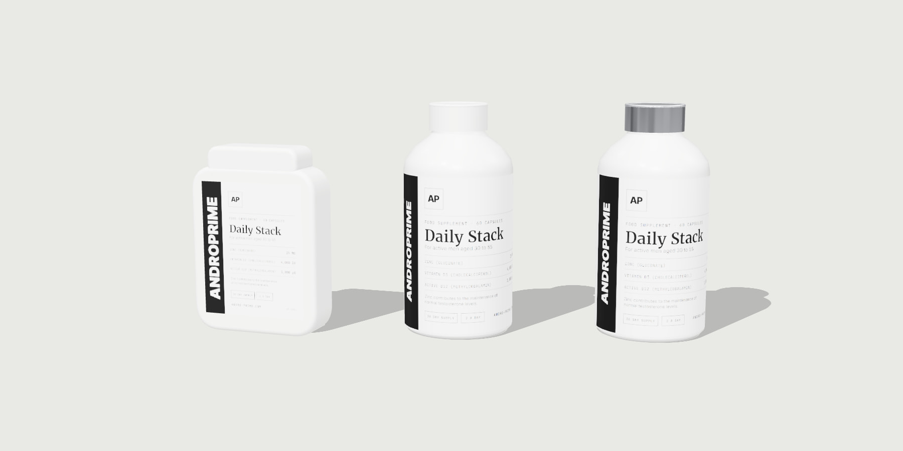
Rendered at true relative scale. The flat packer is the shortest of the three and the only one that fits a letterbox.
1 · Flat mail packer, 150 ml
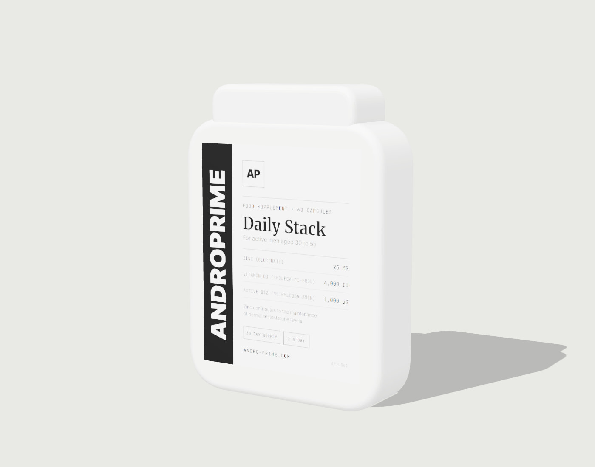
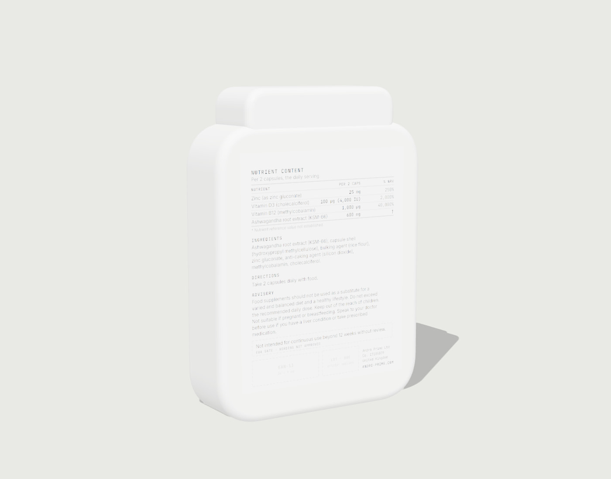
Recommended
- The whole front is flat and visible at once. The spine, the name and the full dose table read together from any angle. That is not true of either round bottle.
- Letterbox delivery. Nutribl's own note is that these go as a large letter, which is the cheapest postage band and removes missed deliveries entirely. On a monthly subscription that compounds twelve times a year per customer.
- Two full panels of 65 × 80 mm, front and back, rather than one wrap split between a front field and a back panel.
- Smaller container, lower legal type floor. See the type note below. This is the only container of the three where the relaxed floor may apply.
2 and 3 · PET round bottles
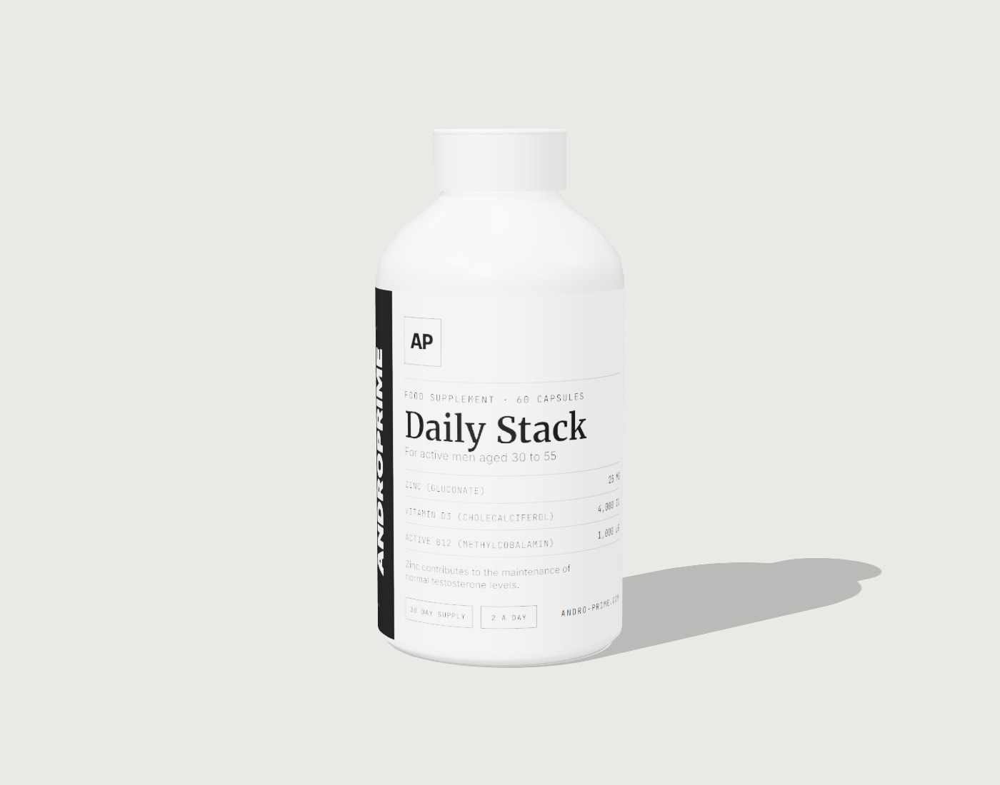
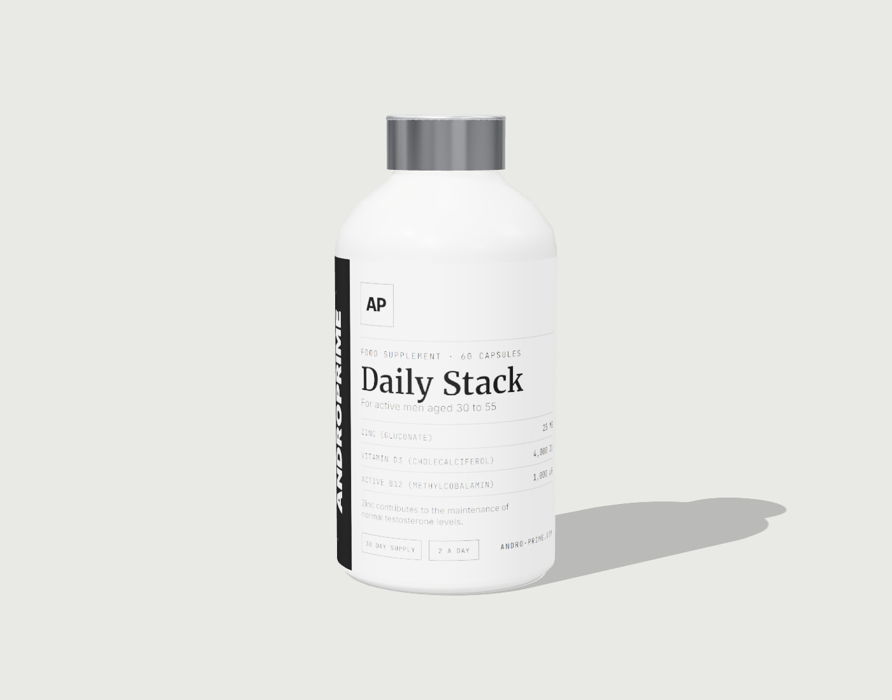
What the renders expose
The front field is wider than the readable arc. On a 64.6 mm bottle you can see roughly 50 mm of label at once. Our front assembly is 98 mm. Look at the dose values in both shots: 25 MG, 4,000 IU and 1,000 µG curve away over the edge and clip. That is not a rendering fault, it is what the physical bottle does.
The spine becomes a side element. It reads as a black stripe at the left silhouette rather than the structural block it is on the flat packer. The device survives, but it stops doing the job it was chosen for.
Chrome versus white lid is the only real aesthetic choice here, and chrome is the stronger of the two: it gives the one point of material contrast a black-and-white brand is otherwise denied. But it also reads more supplement-industry than clinical.
Findings
Container comparison
| Flat mail packer | PET round | |
|---|---|---|
| Sizes offered | 150 / 200 / 320 ml | 100 to 400 ml |
| Colours | White only | White, black, clear · lids white, black, chrome |
| Closure | Induction foil seal + clip-on PP lid | CT neck, tamper-evident rim |
| Label format | Two flat panels, 65 × 80 mm | One wrap, 203 × 90 mm |
| Front readable at once | All 65 mm | About 50 mm of 98 mm |
| Postage | Large letter, letterbox | Small parcel |
| Recyclable | HDPE 2 body, PP 5 lid | PET 1 |
Three things the mockups settled
- The Spine direction wants a flat panel. It was chosen because a 20 mm black band carrying the wordmark reads across a shop floor. On a round bottle that band rolls off the silhouette and the dose table clips. On the flat packer it does exactly what it was picked to do. The container choice and the design direction are the same decision.
- The dose table has to narrow if a round bottle wins. Right-aligning values across a 68 mm measure only works on a flat face. On a wrap the values would have to sit under their labels rather than across from them, which is a different layout, not a tweak.
- Ivory is in doubt on the flat packer. The packer is white only. A warm-white label on a bright white bottle reads as a mismatch rather than a choice. If the flat packer wins, the palette question may answer itself as pure white, which also happens to match the label stock decision costing nothing either way.
Type sizes: the floor may differ by container
Mandatory particulars need a 1.2 mm x-height where the largest surface is 80 cm² or more, and 0.9 mm below that. The flat packer's largest face is roughly 75 × 94 mm, about 70 cm², which would put it under the threshold. The PET bottle is comfortably over. The flat packer back is therefore drawn at the 0.9 mm floor and the PET wrap at 1.2 mm.
CHECK This is read from the regulation, not confirmed by a consultant, and the definition of largest surface for a cylinder is the part I am least sure of. Confirm both before plates.
Joint & Recovery does not fit any stock container
30 servings at about 11 g is roughly 330 g of powder, near 660 ml of bulk volume. Nutribl's largest stock container is the 400 ml PET and the largest flat packer is 320 ml. Neither holds it. That leaves three options and they are all decisions, not details: go bespoke at MOQ 500 per line, move the product to sachets, or cut the serving size. It is not mocked up here because there is no container to mock it up in.
Flags
- CONFIRM Real dimensions. The packer is drawn at 75 × 94 × 25 mm and the PET at 64.6 mm diameter. Both are inferred, the packer partly from the 25 mm letterbox limit. Nutribl will have the real dielines and every label size depends on them.
- DECIDE Container. Flat packer or PET. This decides the label format, the postage band and whether the Spine direction keeps working.
- DECIDE Bottle size if PET. Drawn at 300 ml, which is oversized for 60 capsules and chosen to buy label height. A 150 ml PET would fit the capsules and shrink the readable arc further.
- EWA The 12-week duration line on the back is still her gate, drawn dashed.
- OPEN Net quantity, best-before, storage, origin and the responsible address are still placeholders. This is not complete legal artwork.
How these were made
Real 3D renders in three.js, our own label artwork exported straight from the artwork files and mapped onto the geometry at 1:1, so the dose table, the claim line and the mono type are pixel-exact rather than plausible-looking. The scene source is in renders/_scene-source.html: change a label, re-export the texture, re-render, and every shot updates. These renders are the geometric ground truth and are what exposed the readable-arc problem on the round bottle. For finished marketing imagery, see the model test below: an AI pass over these renders produces a better photograph while keeping the type intact, but only with the right model.
Model test — can a generative model do this instead? Partly, and it depends entirely on the model
Earlier in this workstream the position was that a generative model could not be trusted with our label, because the artwork is nothing but small typography and a diffusion model resynthesises pixels. That was reasoning, not evidence, and the test shows it was too strong. Three models were given the flat-packer render and asked to make it photographic while preserving every character. Two succeeded outright.
| Model | Text fidelity | Geometry fidelity | Verdict |
|---|---|---|---|
| gpt_image_2 | Every string verbatim, including the dose table and claim line | Kept the thin flat body, the wide clip lid and the camera angle | Best. Usable for marketing. |
| nano_banana_2 | Every string verbatim | Drifted: deeper body, different lid, lost the 25 mm profile | Great photo, wrong product |
| flux_kontext | Failed. "ZINC (GLUCONATE)" became "ZINL (BLUONMIC)" and 4,000 IU became 4,999 IU | Held up reasonably | Unusable. Do not use. |
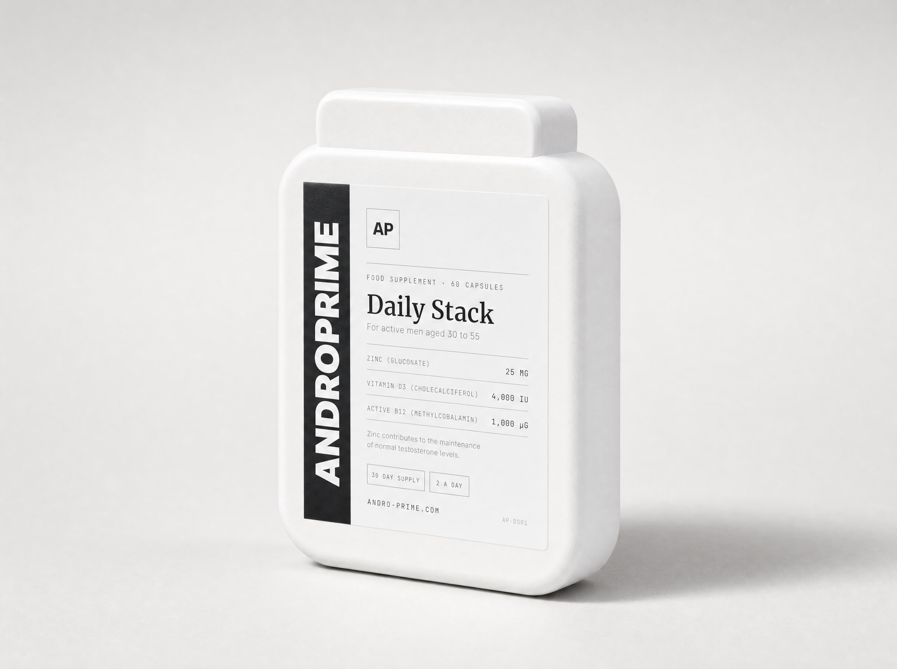
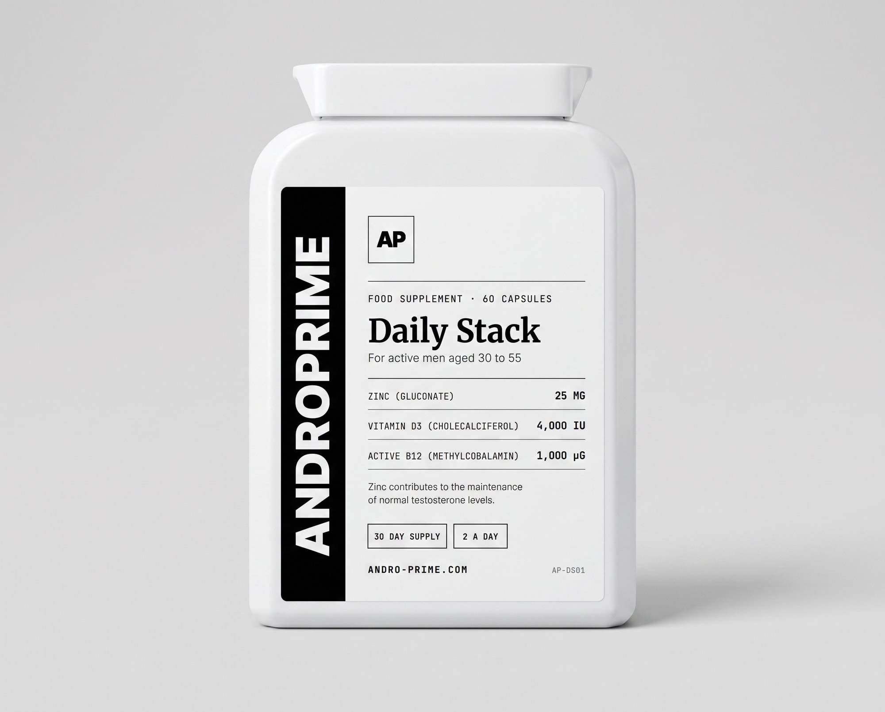
No render was supplied here, only the flat artwork. Every string is correct. The lid and depth are invented, so it is a beautiful image of a bottle we are not buying.
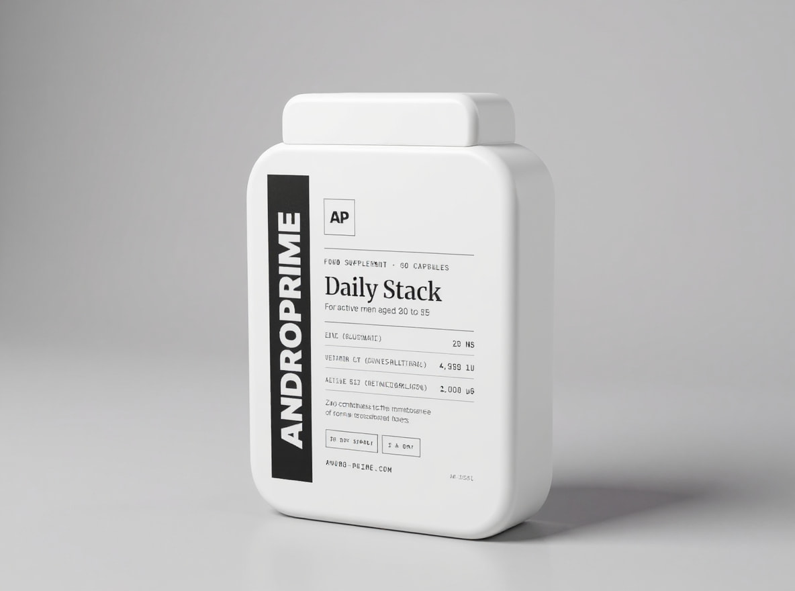
Zoom in. The small type is mush and one dose is simply wrong. This is the exact hazard: not obvious gibberish, but a plausible wrong number on a supplement label.
The pipeline this settles on
- three.js render for truth. Correct dimensions, correct dieline, correct label placement. This is the design-verification artefact and the one to check a decision against. It is free, deterministic and re-renders on every artwork change.
- gpt_image_2 pass over that render for the hero image. Better material, lighting and shadow than the raw render, with the type intact and the geometry respected.
- RULE Read every number at full zoom before any generated image is used. flux_kontext silently changed a dose. A generated packshot is a photograph of a claim, so it gets checked against the spec like copy does, every time, whatever the model.
Nothing here changes the label artwork itself, which still comes only from our own files. What changed is that the finished photograph no longer has to.
PET bottle heroes — white and black, same label
Built the way the pipeline says: our three.js render carries the geometry and the label placement, then a gpt_image_2 pass makes it photographic and matches the container finish to the real Nutribl bottles. The cap ribbing comes from the photoreal pass; the label is ours.
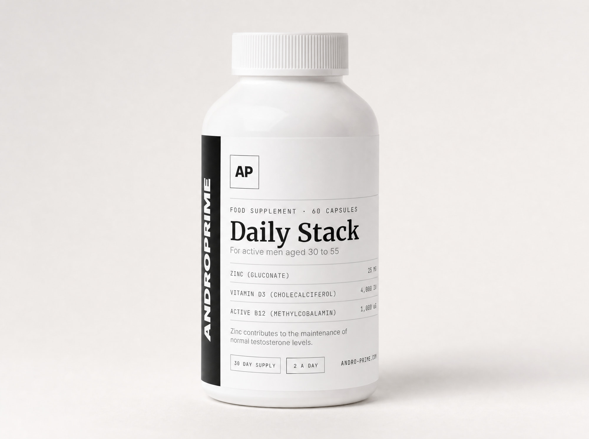
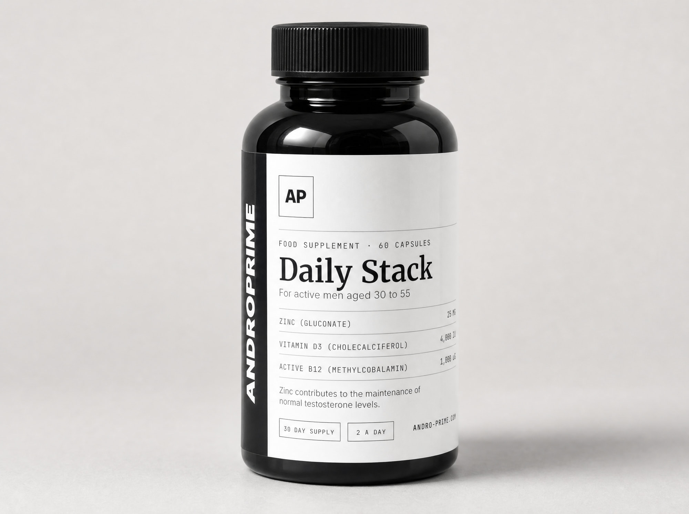
Nutribl offer PET in black. The white label against gloss black is the highest-contrast option in the whole set.
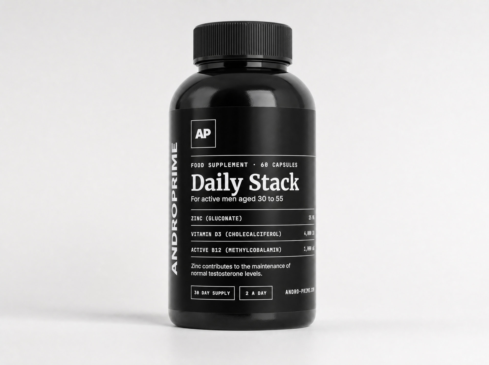
Same artwork, palette inverted, so the label merges into the bottle instead of sitting on it as a sticker. Note what it costs: with a black field the black spine has nothing to contrast against, so the Spine device disappears. Handsome object, weaker brand asset.
Read at full zoom, as the rule requires
- DRIFT The micro sign was lost in all three. Our artwork reads
1,000 µG; every generated image renders it1,000 uG. On finished artwork the unit must be µg. Harmless in a marketing image, wrong on a pack, and exactly the class of error the check exists for. - CONFIRMED The readable-arc problem is still there and is now visible in a photographic image:
25 MG,4,000 IUandANDRO-PRIME.COMall run onto the curve and clip at the right edge. The photoreal pass did not fix it because it is not a rendering artefact. It is the bottle. - Every other string held verbatim across all three, including the claim line.
What this does not change
A black bottle is a genuine option Nutribl offer and it is the most striking of the containers. It does not answer the container question, because the arc problem and the letterbox economics both still favour the flat mail packer. Choosing black is a choice about which bottle, not about whether a bottle.
It does bear on the palette question from a different angle: on a black bottle the ivory-versus-white call becomes a warm-white label against gloss black, which reads cream rather than off-white. If black wins, pure white is almost certainly the label stock.
On the actual Nutribl bottles — supplied photos, our label, nano_banana_2
Keith supplied the two real bottle photographs. These are those exact bottles with our label applied, generated in one step from the two references. No substituted geometry.
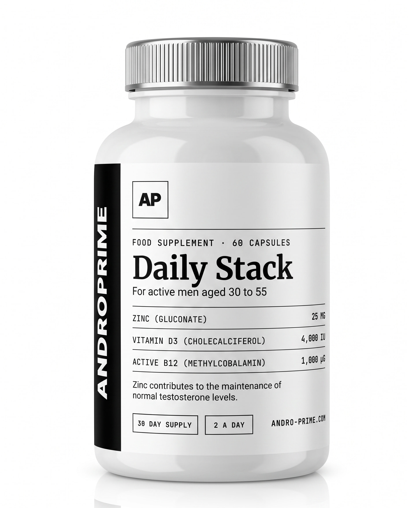
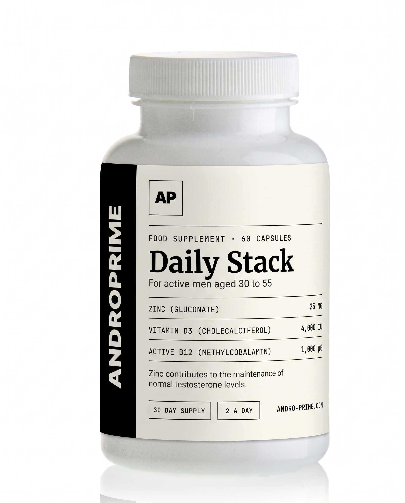
Full-zoom check
- Every string verbatim on both, including the claim line.
- The micro sign came back correct this time:
1,000 µG, notuG. The fix was naming the exact character in the prompt. That is now the rule for any generated pack image. - Nothing clips. The model fitted the label to the visible face instead of wrapping our full 98 mm front assembly. That is a hint at the real fix for the round bottle: narrow the front assembly to about 60 mm so it fits the readable arc, rather than accepting the clipping.
- Label tone on the white bottle reads slightly warm, closer to ivory than pure white. Worth noting against the palette call.
Source photographs kept alongside as _source-bottle-*.png.
Inverted label on the white bottles
Same artwork, palette inverted: black field, white type, on Keith supplied white bottles. Generated with nano_banana_2 from the bottle photograph plus the inverted label.

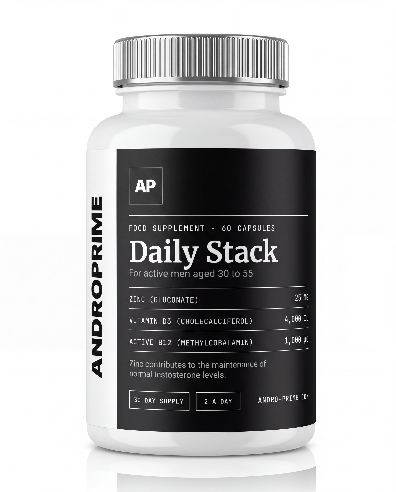
The spine survives here
Inverting on a black bottle killed the Spine device, because a black band on a black field has nothing to contrast against. Inverting on a white bottle does the opposite: the spine becomes a white channel carrying the wordmark in black, running straight out of the bottle colour, with the black field beside it. The device is not just preserved, it is stronger than on the white-label version, because the bottle itself now forms part of the mark.
Full-zoom check: every string verbatim on both, and 1,000 µG correct with the micro sign, because the character is named explicitly in the prompt.
Trade-off to weigh: a near-full-coverage black label is the most expensive to print well of anything drawn so far. Solid black over a large area shows banding, scuffing and fingerprints, and it argues for matt laminate rather than uncoated.